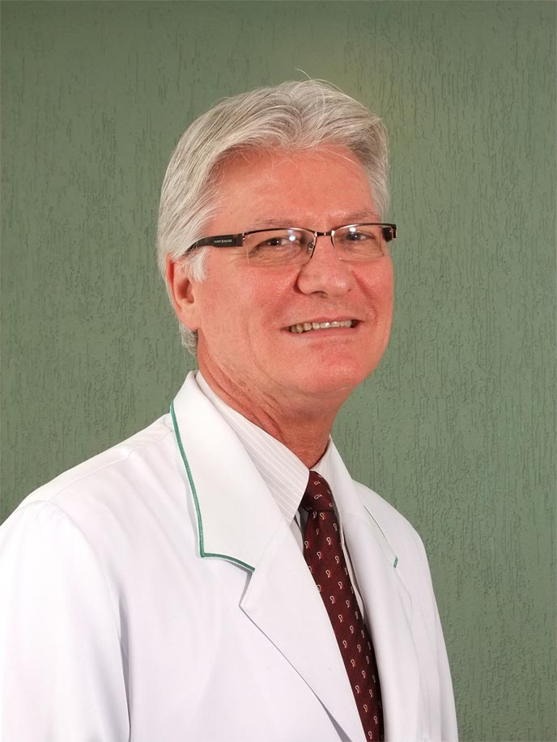

Graduado em medicina pela Faculdade de Medicina da Universidade Católica de Pelotas, especializou-se em Oftalmologia pela Universidade Católica do Rio Janeiro e pela Sociedade Brasileira de Oftalmologia. Também é especialista em Homeopatia pela Sociedade de Homeopatia do Estado do Rio de Janeiro. É membro titular da Sociedade Brasileira de Oftalmologia, do Conselho Brasileiro de Oftalmologia, da Sociedade Brasileira de Cirurgia Refrativa, Sociedade Brasileira de Plástica Ocular, Membre Titulaire de L’Association - Société Française D’Ophtalmologie, Paris - France, membro titular da Sociedade Brasileira de Homeopatia do Estado do Rio de Janeiro e Membership (International Member) American Academy of Ophthalmology San Francisco, Califórnia - USA.
Dr. Jorge Fernando Monteiro de Oliveira
CRM 52.36388-7
Graduado em medicina pela Faculdade de Medicina da Universidade Católica de Pelotas, especializou-se em Oftalmologia pela Universidade Católica do Rio Janeiro e pela Sociedade Brasileira de Oftalmologia. Também é especialista em Homeopatia pela Sociedade de Homeopatia do Estado do Rio de Janeiro. É membro titular da Sociedade Brasileira de Oftalmologia, do Conselho Brasileiro de Oftalmologia, da Sociedade Brasileira de Cirurgia Refrativa, Sociedade Brasileira de Plástica Ocular, Membre Titulaire de L’Association - Société Française D’Ophtalmologie, Paris - France, membro titular da Sociedade Brasileira de Homeopatia do Estado do Rio de Janeiro e Membership (International Member) American Academy of Ophthalmology San Francisco, Califórnia - USA.

Dra. Juliane Moledo de Siqueira
CRM 52.59722-6
Graduada e Pós Graduada em medicina pela Universidade Gama Filho, especializou-se em Oftalmologia pela Sociedade Brasileira de Oftalmologia e pelo Conselho Brasileiro de Oftalmologia. Residente pelo Hospital dos Servidores do Estado do Rio de Janeiro e Fellowship pelo Hospital do Olho. É membro titular da Sociedade Brasileira de Oftalmologia e do Conselho Brasileiro de Oftalmologia.

Dra. Lúcia Hoehl da Silva Loureiro
(Plástica Ocular e Vias Lacrimais)
CRM 52.68852-5
Cursou medicina na Universidade Federal Fluminense e especializou-se em Oftalmologia e Plástica Ocular e Vias Lacrimais no Hospital dos Servidores do Estado. É membro do Conselho Brasileiro de Oftalmologia, de onde recebeu o título de especialista. Atualmente, além de consultas, realiza Cirurgias Plásticas e trata de Vias Lacrimais.
Dra. Alléxya Affonso Antunes Marcos
CRM 52.0099702-1
Graduada em medicina pela Escola de Medicina da Fundação Técnico Educacional Souza Marques, pós-graduada pela Escola Médica de Pós Graduação da Pontifícia Universidade Católica e especializou-se em Retina Clínica do Serviço de Oftalmologia da Faculdade de Medicina da Universidade Federal Fluminense. Foi residente em Oftalmologia pelo Instituto Benjamin Constant e teve experiências de trabalho na Rede D´Or e Clínica de Olhos São Francisco de Assis.